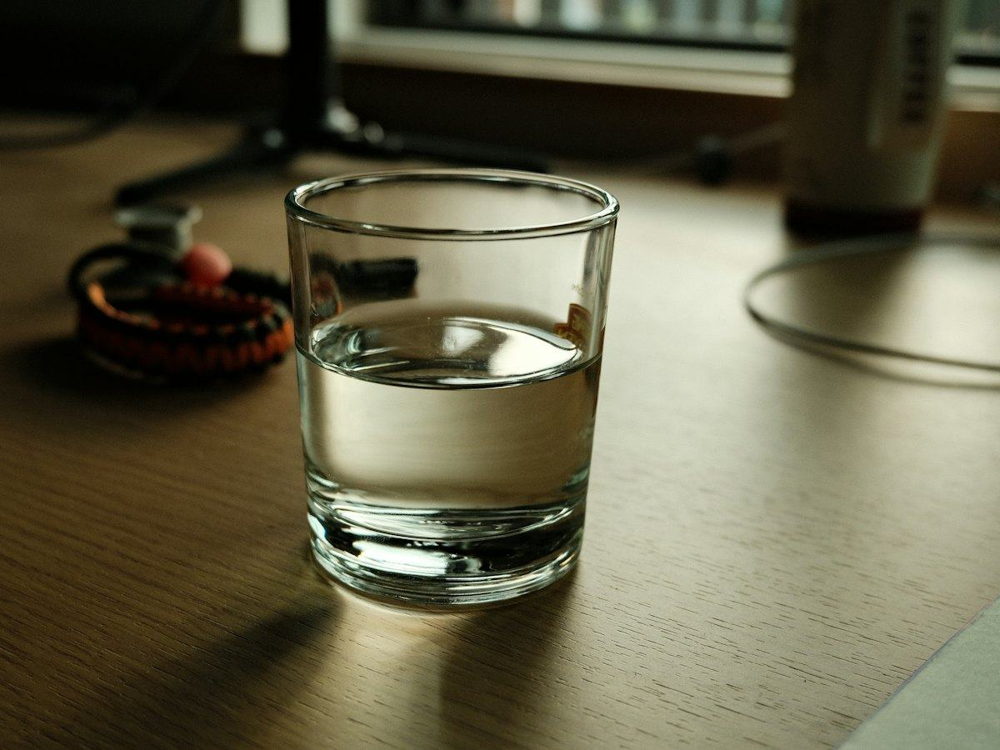
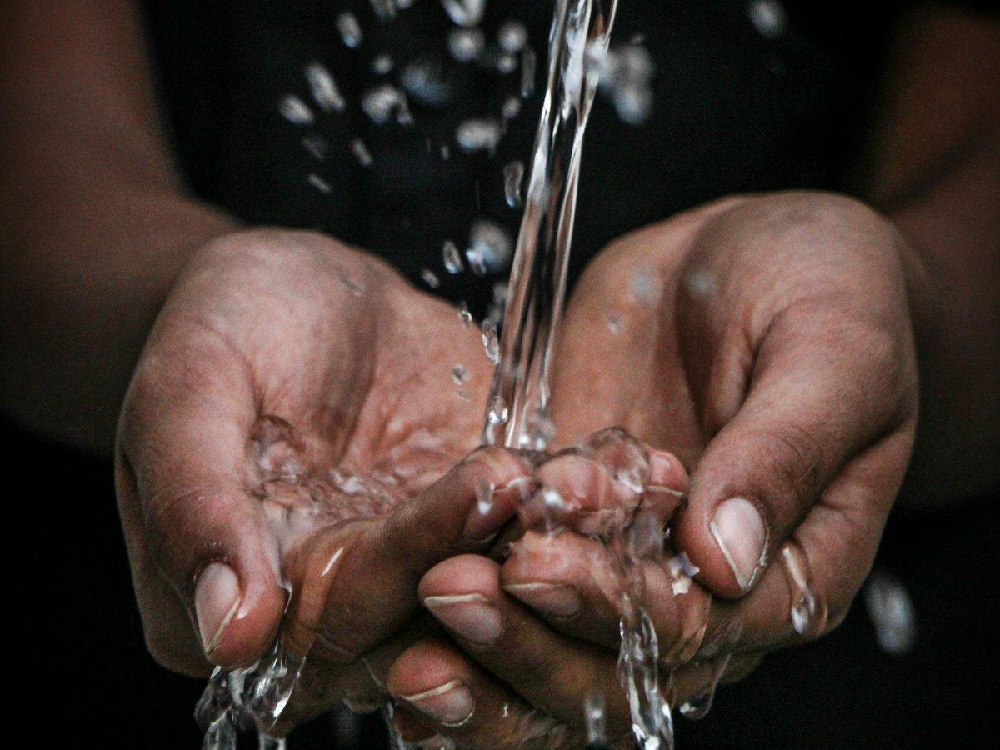

Hidratación
Bebidas isotónicas o agua: cuándo necesitas cada una
Cuándo basta con agua y cuándo tiene sentido una bebida deportiva con sodio e hidratos: qué dicen los estudios sobre el ejercicio de más de una hora.
 Por el equipo editorial de Pombo AI
Por el equipo editorial de Pombo AI
12 nov 2026 · 5 min de lectura

"Hay que beber dos litros de agua al día" es de las frases más repetidas. La realidad es un poco distinta: la cifra existe, pero incluye mucho más que el agua del vaso.
La EFSA estableció en 2010 las cantidades de agua recomendables para la población general, con temperatura y actividad física moderadas, incluyendo lo que aportan los alimentos. Para mayores de 14 años son unos 2 litros al día en mujeres y 2,5 litros en hombres.
Para los niños, según Consumer, las cifras son de 1,3 L/día entre 2 y 3 años, 1,6 L/día entre 4 y 8 años, y 1,9 L/día en niñas y 2,1 L/día en niños de 9 a 13 años.
La estimación general es que solo el 20 % del agua que tomamos viene de la comida y el 80 % restante hay que beberlo. Esto incluye agua, leche, infusiones y otras bebidas, aunque el agua debería ser la principal.

Si entrenas, lee también nuestra guía de cuánta agua beber antes, durante y después del ejercicio.
La EFSA fija una ingesta adecuada de unos 2 litros al día para las mujeres y 2,5 litros para los hombres, pero esa cifra incluye el agua de los alimentos y de otras bebidas, no solo el agua del vaso.
Según Consumer, el agua del grifo y la mineral embotellada son igual de sanas y seguras; cambian el sabor y el precio.
Aviso: Este artículo es informativo y no sustituye el consejo de un médico o dietista-nutricionista. Si tienes una enfermedad, tomas medicación, estás embarazada o has tenido un trastorno de la conducta alimentaria, consulta con un profesional antes de cambiar tu alimentación.
Cuándo basta con agua y cuándo tiene sentido una bebida deportiva con sodio e hidratos: qué dicen los estudios sobre el ejercicio de más de una hora.
Cómo entrenar con calor sin riesgos: recomendaciones del Ministerio de Sanidad, síntomas del golpe de calor y qué hacer ante calambres o mareos.
Guía práctica basada en el consenso del American College of Sports Medicine: pérdida de peso por sudor, cantidades orientativas y riesgos de beber de menos o de más.